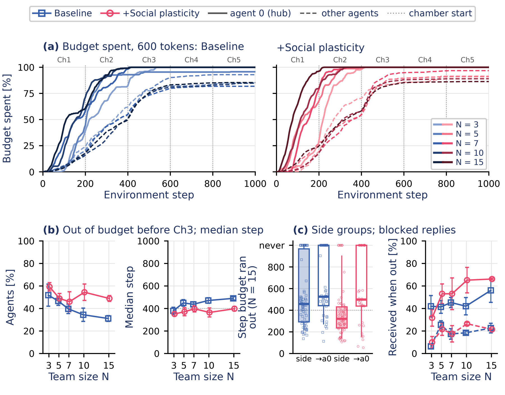
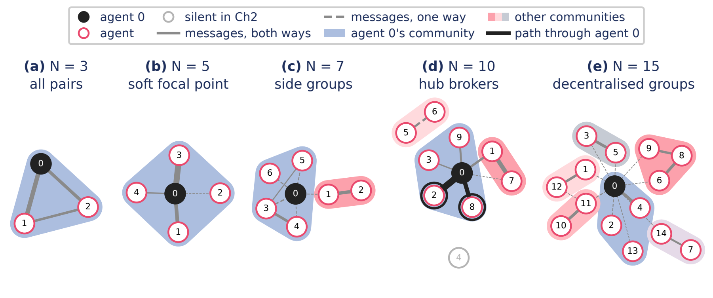

Cooperative progress increases from three to fifteen agents under every communication budget, though not monotonically. Averaged across budgets, the MindForge baseline improves from 9.6% to 18.3% completion.
Social plasticity improves completion at every team size except N = 10, where the arms tie, by 1.3–3.5 points, reaching 21.6%. Smaller social-plasticity teams beat larger baseline teams: three vs five agents (13.1% vs 11.3%), five vs seven (14.4% vs 13.9%).
The gain is largest with only 600 tokens per agent (+2.9 points). With 600 tokens, social-plasticity teams outperform baseline teams given 10,400 tokens at every team size, from N = 3 (15.0% vs 8.5%) to N = 15 (20.3% vs 19.6%).
At N = 15 the focal agent talks with about ten distinct partners, the others with about three. Social plasticity forms tighter conversational groups at every team size: +0.10 vs −0.02 above chance at N = 5, +0.22 vs +0.13 at N = 15.
Team cooperative completion: the share of the seventeen Chamber 2–5 cooperative milestones the team completes per episode, each counted once however many agents are credited, so the denominator does not depend on N. It differs from the per-agent Coop. % of the RQ1 table.
Social plasticity improves cooperation and compute efficiency as teams grow
The tie at ten agents reflects a ceiling rather than a lack of coordination. WIRE's cooperative milestones are, by design, the same at every team size: by ten agents both arms reliably complete the switch-ring and first-kill milestones, and further milestones, such as breaking the Chamber 2 anvils, are reached more often only with fifteen agents, where social plasticity leads again. The social-plasticity Pareto front lies above the baseline's over most of the inference-compute range.

Social plasticity helps under constrained communication budgets
The largest average gain comes with only 600 tokens per agent (+2.9 points), against +2.6 at 10,400 tokens and +0.7 at 2,600. Under the tightest budget, social plasticity raises cooperative completion from 9.2% to 15.0% with three agents, from 13.7% to 17.0% with five and likewise with seven, and from 18.3% to 20.3% with fifteen. Which budget a team gets matters less than whether it has social plasticity: with it, the tightest budget gives the best result at three, five and ten agents, and at seven and fifteen it trails the largest budget by at most 1.3 points, within seed noise.


Talk is front-loaded
Spending is concentrated in Chambers 1–2 in both arms, and social-plasticity agents use up their messages sooner: 46–59% run out before Chamber 3, against 31–52% of baseline agents. Most of their communication therefore happens in the first two chambers.
The hub runs dry first
As teams grow, the hub runs out sooner and more of the messages sent to it arrive after it can no longer reply; for the other agents this share stays flat. Under the tightest budget, the hub of a fifteen-agent team runs out at a median step of 108, against 268 in teams of three.
Larger teams develop structured communication without central assignment
As the team grows, communication does not expand uniformly across all pairs. Two complementary structures emerge: a focal agent that talks with much of the team, and smaller groups of agents that interact more often with one another. At N = 15 the focal agent communicates with about ten distinct partners, against about three for the others, resembling the centralised communication networks studied in human groups. Each agent keeps a small number of frequent partners, so larger teams form more conversational groups rather than proportionally larger ones.


Groups tighter than chance
Weighted Louvain modularity captures how strongly agents talk within groups rather than across them; comparing it with rewired networks that keep each agent's number of partners tells whether the groups are more structured than chance. Negative values, as for baseline teams of five, mean messages spread across groups more evenly than chance, as when one hub talks to everyone. In the baseline, modularity exceeds the rewired reference by 0.12–0.13 from N = 10, and grouping grows with team size (Spearman ρ = +0.53, p < 0.001).
Social plasticity strengthens the structure
Social plasticity produces stronger conversational groups than the baseline at every team size, raising modularity above the reference from −0.02 to +0.10 at N = 5 and from +0.13 to +0.22 at N = 15. Agents other than the hub reply to 6–18 points more of their messages, significantly at N = 10 and 15, and learned bonds track message frequency (Spearman ρ = +0.53 at N = 3, +0.24 at N = 15). It reinforces emerging communication structure without assigning partners or imposing a topology.
New forms of coordination emerge as the team grows
One conversation at three agents, a soft focal point at five, side groups at seven, a hub that mediates coordination at ten, and decentralised groups at fifteen.


3 agents: one conversation
The three agents form a single conversation, usually a path through agent 0, and cooperation runs through direct requests to the teammate who can act. In the switch ring, an agent asks the teammate controlling its door to press the switch, and the teammate presses six steps later.
5 agents: a soft focal point
The team still forms one conversation, but agent 0 becomes its default point of contact: about three in four agents send it their first message. Agents still coordinate directly, now in complete request–action–acknowledgement loops: an agent asks for a switch, the teammate presses and confirms, and the freed agent thanks it and moves on.
7 agents: side groups split off
Groups of two or three agents coordinate among themselves beside the conversation around agent 0, in 61% of episodes. Reasoning extends beyond a single partner: agent 5 tells its predecessor, agent 4, that it is pressing its switch to free its successor, agent 6.
10 agents: the hub mediates coordination
Agent 0 now connects agents who never talk to each other directly. Side groups appear in 93% of episodes. In one episode agent 2 tells agent 0 it is ready to work on an anvil "with you and Agent 8"; three steps later agent 0 tells agent 8 it is coming to help "as requested". Agents 2 and 8 never message each other, yet coordinate on the same anvil through agent 0.
15 agents: coordination decentralises
The hub saturates and coordination moves into the groups. The focal agent receives 26–28% of Chamber 2 messages but replies to fewer than one in four, and under the tightest budget 56–66% of the messages sent to it arrive after it has run out. The team instead coordinates through 3.4–3.9 smaller groups per episode, where social plasticity raises reply rates of agents other than the hub (58% vs 40%, p < 0.001).
Watch the team organise, from 3 to 15 agents
One episode per arm and team size at the 2,600-token budget, the one closest to its cell's median Chamber 2 structure (at N = 15, the two episodes above), each from its first step to its last in about 16 seconds. Agents are blocks that grow with their number of distinct partners; the four with the most partners at the end become ore blocks. A message lights its link up like redstone, and two agents credited for the same milestone burst with green orbs. The windows on the right show the share of agents with at least k partners against random graphs with the same number of links, and partner counts over time. The Network view draws the same data as a plain chart.
Gemma-E4B no social layer
No learned bonds: whom to message is left to the prompt and each agent's own reasoning.
N = 15 · 2,600 tokens per agent · seed 42, episode 1
Gemma-E4B +Social plasticity
Each agent also receives its row of learned bonds when it decides whom to address.
N = 15 · 2,600 tokens per agent · seed 123, episode 1